About Me
I am a PhD student in VITA group at the University of Texas at Austin advised by Prof. Zhangyang Wang. My research interests include machine learning and computer vision, especially in adversarial robustness and model compression.Education
 |
Ph.D. in Electrical and Computer Engineering |
| University of Texas at Austin | |
| 08/2020-Present | |
 |
Ph.D. in Computer Science and Engineering |
| Texas A&M University | |
| 08/2018-07/2020 | |
| B.S. in Electronic Engineering | |
| Tsinghua University | |
| 08/2014-06/2018 |
Professional Experience
| Research Intern | |
| Amazon Web Services | |
| Advisor: Dr. Aston Zhang, Dr. Mu Li | |
| 05/2021-08/2021 · East Palo Alto | |
| Research Intern | |
| NVIDIA | |
| Advisor: Dr. Zhiding Yu, Dr. Anima Anandkumar | |
| 05/2020-08/2020 · Santa Clara | |
| Research Intern | |
| Kwai Inc. | |
| Advisor: Dr. Ji Liu | |
| 05/2019-08/2019 · Seattle |
Publications
| 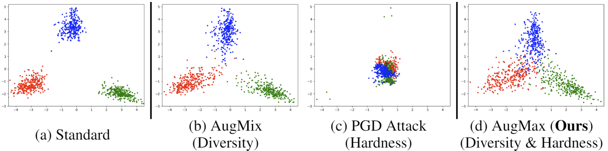 | Haotao Wang, Chaowei Xiao, Jean Kossaifi, Zhiding Yu, Animashree Anandkumar, and Zhangyang Wang. “AugMax: Adversarial Composition of RandomAugmentations for Robust Training.”
In Advances in Neural Information Processing Systems (NeurIPS), 2021. [code] |
| 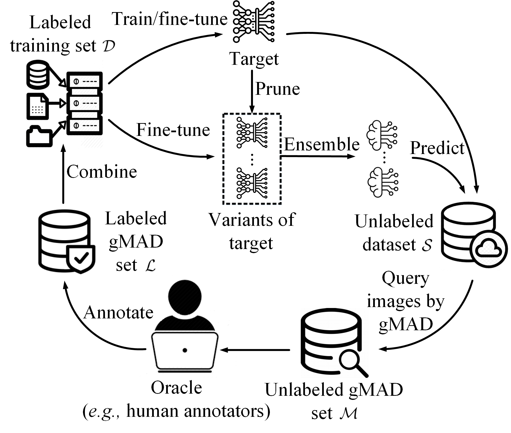 | Zhihua Wang, Haotao Wang, Tianlong Chen, Zhangyang Wang and Kede Ma. “Troubleshooting Blind Image Quality Models in the Wild.”
In International Conference on Computer Vision and Pattern Recognition (CVPR), 2021. [pdf] |
| 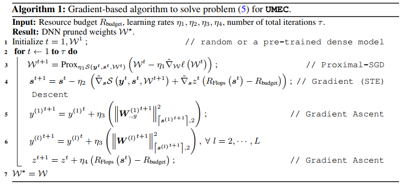 | Jiayi Shen, Shupeng Gui*, Haotao Wang*, Jianchao Tan, Zhangyang Wang and Ji Liu. “UMEC: Unified model and embedding compression for efficient recommendation systems.”
In International Conference on Learning Representations (ICLR), 2021. [pdf] *Equal contributions. |
| 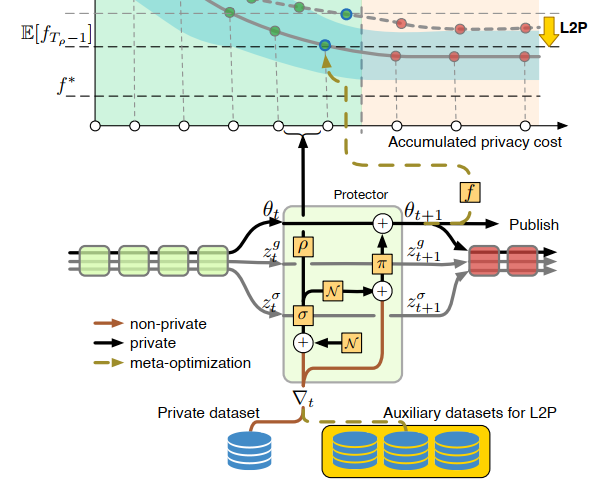 | Junyuan Hong, Haotao Wang, Zhangyang Wang, and Jiayu Zhou. “Learning Model-Based Privacy Protection under Budget Constraints.”
In AAAI Conference on Artificial Intelligence (AAAI), 2021. [pdf] |
| 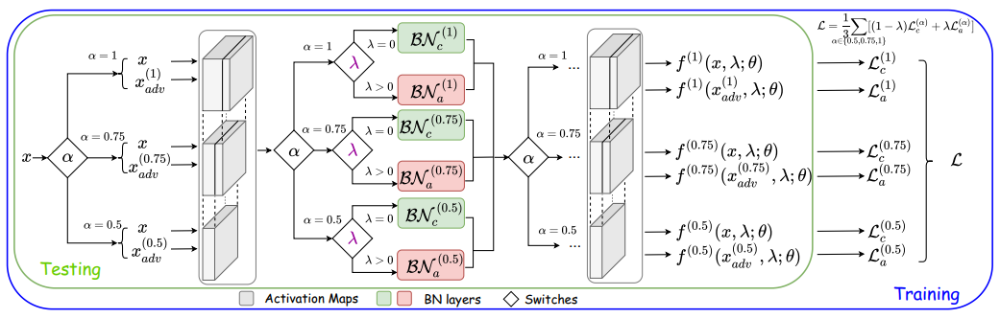 | Haotao Wang*, Tianlong Chen*, Shupeng Gui, Ting-Kuei Hu, Ji Liu, and Zhangyang Wang. “Once-for-All Adversarial Training: In-Situ Tradeoff between Robustness and Accuracy for Free.”
In Advances in Neural Information Processing Systems (NeurIPS), 2020. [pdf] [code] *Equal contributions. |
| 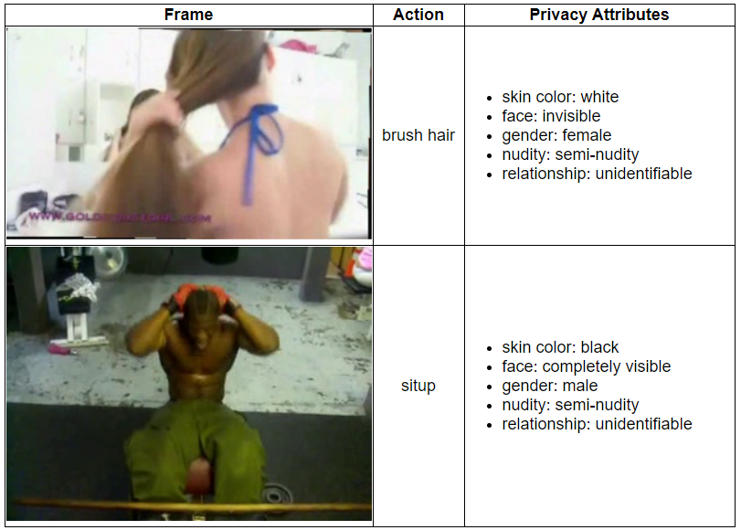 | Haotao Wang*, Zhenyu Wu*, Zhaowen Wang, Hailin Jin, and Zhangyang Wang. “Privacy-Preserving Deep Visual Recognition: An Adversarial Learning Framework and A New Dataset.”
IEEE Transactions on Pattern Analysis and Machine Intelligence (TPAMI), 2020. [pdf] [project homepage] [code and dataset] *Equal contributions. |
| 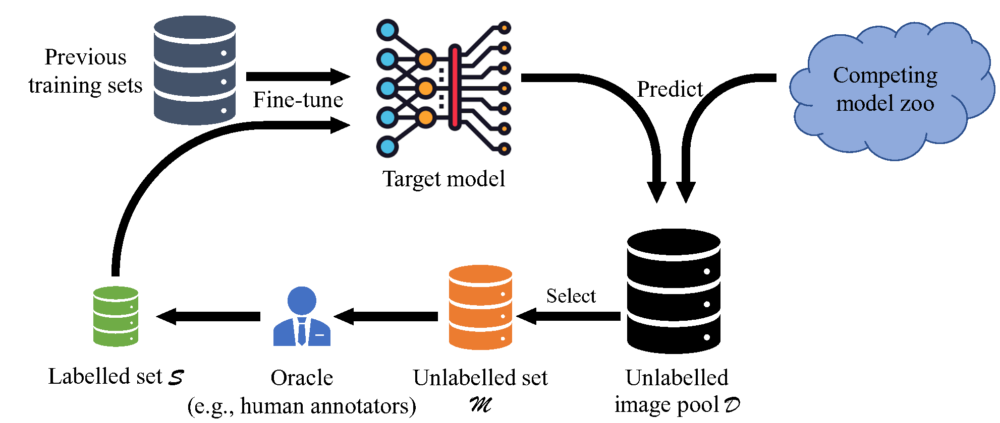 | Haotao Wang, Tianlong Chen, Kede Ma, and Zhangyang Wang. “Efficiently Troubleshooting Image Segmentation Models with Human-In-The-Loop.”
Machine Learning Journal (MLJ), 2021. |
| 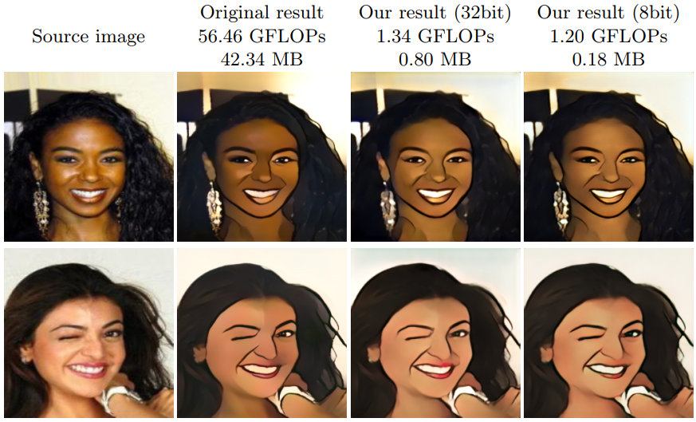 | Haotao Wang, Shupeng Gui, Haichuan Yang, Ji Liu, and Zhangyang Wang. “GAN Slimming: All-in-One GAN Compression by A Unified Optimization Framework.”
In European Conference on Computer Vision (ECCV), 2020. Spotlight Oral [pdf] [code] |
| 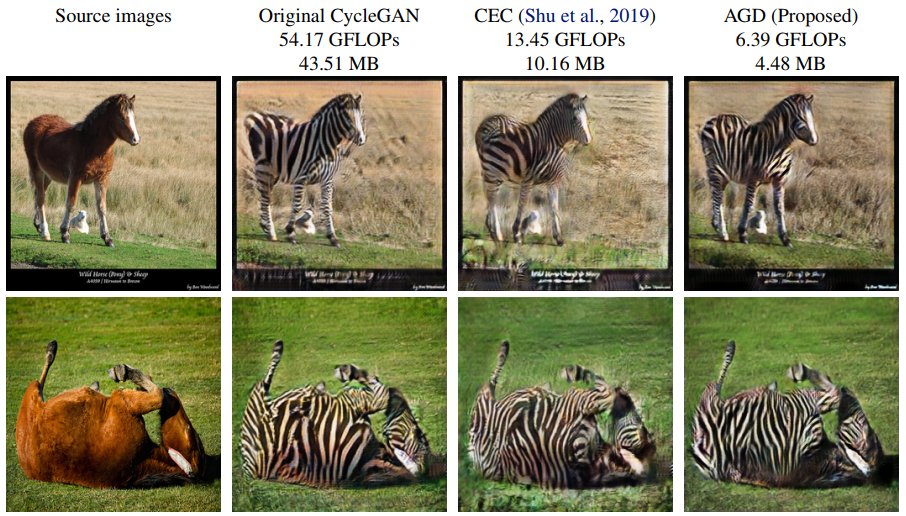 | Yonggan Fu, Wuyang Chen, Haotao Wang, Haoran Li, Yingyan Lin, and Zhangyang Wang. “AutoGAN-Distiller: Searching to Compress Generative Adversarial Networks.”
In International Conference on Machine Learning (ICML), 2020. [pdf] [code] |
 |
Haotao Wang, Tianlong Chen, Zhangyang Wang, and Kede Ma. “I Am Going MAD: Maximum Discrepancy Competition for Comparing Classifiers Adaptively.”
In International Conference on Learning Representations (ICLR), 2020. [pdf] [code] |
| 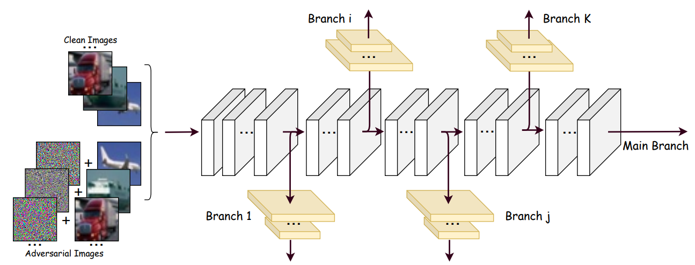 | Ting-Kuei Hu, Tianlong Chen, Haotao Wang, and Zhangyang Wang. “Triple Wins: Boosting Accuracy, Robustness and Efficiency Together by Enabling Input-Adaptive Inference.”
In International Conference on Learning Representations (ICLR), 2020. [pdf] [code] |
| 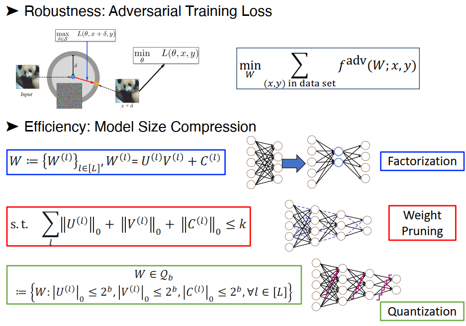 | Haotao Wang*, Shupeng Gui*, Haichuan Yang, Chen Yu, Zhangyang Wang, and Ji Liu. “Model Compression with Adversarial Robustness: A Unified Optimization Framework.”
In Advances in Neural Information Processing Systems (NeurIPS), 2019. [pdf] [code] *Equal contributions. |